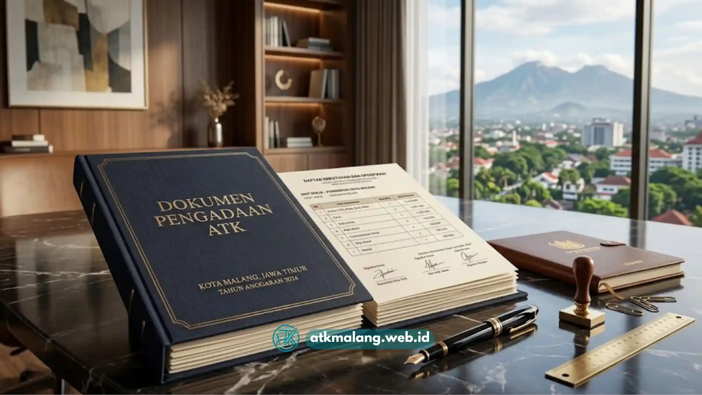

Paket atk bulanan Malang adalah skema langganan Alat Tulis Kantor yang dikirim rutin setiap bulan sehingga kantor tidak perlu memesan satu per satu, sekaligus membantu menekan biaya operasional secara terukur.
- Paket atk bulanan menyederhanakan proses pemesanan karena kebutuhan rutin dikirim otomatis tanpa harus checkout berulang kali.
- Skema ini membantu kantor menjaga arus kas karena biaya atk menjadi pos anggaran bulanan yang tetap dan mudah diproyeksikan.
- Risiko kehabisan stok mendadak dapat ditekan karena pengiriman dijadwalkan sesuai pola pemakaian kantor.
- Paket bulanan umumnya menawarkan harga per unit lebih kompetitif dibanding pembelian satuan yang tidak terjadwal.
- Kantor dengan banyak cabang di area Malang dapat menyeragamkan standar alat tulis melalui satu skema langganan.
Daftar Isi
- Apa Itu Paket ATK Bulanan dan Bagaimana Cara Kerjanya
- Mengapa Paket ATK Bulanan Lebih Efisien Dibanding Beli Satuan
- Apa Saja Manfaat Paket ATK Bulanan bagi Opex Kantor
- Faktor Apa Saja yang Perlu Dipertimbangkan Sebelum Memilih Paket
- Kesalahan Umum saat Memilih Paket ATK Bulanan
- Tips Memaksimalkan Manfaat Paket ATK Bulanan
- Bagaimana Paket ATK Bulanan Dibandingkan dengan Pengadaan Manual
Apa Itu Paket ATK Bulanan dan Bagaimana Cara Kerjanya
Paket atk bulanan adalah layanan berlangganan di mana supplier mengirimkan Alat Tulis Kantor secara berkala setiap bulan berdasarkan daftar kebutuhan yang telah disepakati bersama klien.
Cara kerjanya dimulai dari proses pendataan kebutuhan kantor, seperti jenis kertas, pulpen, tinta printer, hingga perlengkapan meja. Setelah daftar kebutuhan disepakati, supplier menyusun jadwal pengiriman rutin, biasanya di awal atau pertengahan bulan, tergantung kesepakatan.
Kantor cukup melakukan konfirmasi atau penyesuaian jumlah setiap periode tanpa harus membuat pesanan baru dari nol. Model ini berbeda dengan pembelian eceran karena harga, kuantitas, dan jadwal sudah ditetapkan di awal kontrak. Perubahan kebutuhan mendadak, seperti lonjakan penggunaan kertas saat ada proyek besar, biasanya masih bisa diakomodasi melalui pesanan tambahan di luar paket utama.
Mengapa Paket ATK Bulanan Lebih Efisien Dibanding Beli Satuan
Efisiensi paket atk bulanan terletak pada penghematan waktu administrasi dan potensi harga yang lebih stabil dibanding pembelian satuan yang dilakukan berulang kali setiap kali stok menipis.
Ketika kantor membeli atk secara satuan, staf procurement harus mengecek stok, membuat purchase order, menunggu approval, lalu menunggu pengiriman setiap kali kebutuhan muncul. Proses ini memakan waktu dan berpotensi menimbulkan biaya tersembunyi berupa jam kerja staf yang terpakai untuk administrasi berulang.
Dengan paket bulanan, seluruh proses tersebut disederhanakan menjadi satu siklus rutin. Staf hanya perlu memverifikasi kiriman dan menyesuaikan kebutuhan jika ada perubahan, sehingga waktu kerja dapat dialokasikan untuk tugas lain yang lebih strategis. Dari sisi biaya, supplier umumnya memberikan harga khusus untuk pelanggan berlangganan karena ada kepastian volume pembelian setiap bulan, meski besaran diskon dapat bervariasi tergantung kesepakatan dan volume kebutuhan.
Apa Saja Manfaat Paket ATK Bulanan bagi Opex Kantor
Manfaat utama paket atk bulanan bagi opex kantor adalah anggaran yang lebih mudah diprediksi karena biaya alat tulis menjadi pos pengeluaran tetap setiap bulan, bukan biaya tidak terduga.
Beberapa manfaat lain yang umum dirasakan kantor yang menggunakan skema ini antara lain:
- Anggaran lebih terukur: Karena nominal pembelian relatif konsisten setiap bulan, tim keuangan dapat memasukkan pos atk ke dalam anggaran operasional tanpa banyak fluktuasi.
- Minim risiko kehabisan stok: Jadwal pengiriman rutin membantu memastikan stok tidak habis di tengah kesibukan kerja.
- Pengurangan beban administrasi: Tim tidak perlu membuat pesanan baru berulang kali setiap minggu atau setiap kali stok menipis.
- Standardisasi kualitas barang: Kantor mendapatkan jenis dan merek atk yang konsisten dari waktu ke waktu, sehingga kualitas kerja dan tampilan dokumen tetap seragam.
- Kemudahan evaluasi penggunaan: Data pemakaian bulanan yang konsisten memudahkan kantor menganalisis tren konsumsi atk dari waktu ke waktu.

Pengiriman paket ATK bulanan yang terjadwal rapi dapat membantu efisiensi waktu staf kantor.Faktor Apa Saja yang Perlu Dipertimbangkan Sebelum Memilih Paket
Faktor utama yang perlu dipertimbangkan sebelum memilih paket atk bulanan Malang adalah kesesuaian daftar barang dengan kebutuhan riil kantor, bukan sekadar tergiur harga murah di awal penawaran.
Beberapa hal yang layak dicermati sebelum menandatangani kontrak paket bulanan meliputi:
- Fleksibilitas isi paket: Pastikan supplier mengizinkan penyesuaian jenis dan jumlah barang setiap bulan sesuai kebutuhan aktual, bukan paket kaku yang tidak bisa diubah.
- Kejelasan skema harga: Tanyakan apakah harga bersifat tetap selama periode kontrak atau dapat berubah mengikuti kondisi pasar.
- Legalitas dan dokumen pajak: Untuk kebutuhan kantor berbadan hukum, pastikan supplier dapat menerbitkan faktur atau dokumen pajak yang sesuai ketentuan.
- Wilayah dan waktu pengiriman: Karena berbasis di Malang, pastikan cakupan pengiriman mencakup area kantor Anda dengan waktu tempuh yang wajar.
- Rekam jejak layanan: Cek pengalaman klien lain terhadap ketepatan waktu pengiriman dan kualitas barang yang dikirim.
Kesalahan Umum saat Memilih Paket ATK Bulanan
Kesalahan umum yang sering terjadi adalah memilih paket hanya berdasarkan harga termurah tanpa mengecek kesesuaian jenis barang dengan kebutuhan kantor sehari-hari.
Kesalahan lain yang sering ditemui antara lain kantor tidak melakukan evaluasi ulang isi paket setelah beberapa bulan berjalan, padahal kebutuhan operasional bisa berubah seiring pertumbuhan tim atau perubahan jenis pekerjaan. Selain itu, banyak kantor tidak menyimpan catatan pemakaian atk secara rapi, sehingga sulit menilai apakah paket yang dipilih sudah efisien atau justru menyebabkan penumpukan stok yang tidak terpakai.
Kesalahan berikutnya adalah mengabaikan klausul kontrak terkait perubahan harga atau penghentian langganan. Kantor sebaiknya memahami secara jelas mekanisme jika ingin mengubah jumlah pesanan, menambah jenis barang baru, atau menghentikan kontrak di tengah periode berjalan.
Tips Memaksimalkan Manfaat Paket ATK Bulanan
Tips paling efektif untuk memaksimalkan manfaat paket atk bulanan adalah melakukan evaluasi rutin terhadap daftar barang dan volume pemakaian setiap tiga hingga enam bulan sekali.
Beberapa langkah praktis yang dapat diterapkan kantor meliputi menunjuk satu penanggung jawab khusus untuk memantau stok dan komunikasi dengan supplier, mencatat pola pemakaian tiap divisi agar alokasi barang lebih tepat sasaran, serta membuka komunikasi terbuka dengan supplier bila ada kebutuhan mendadak di luar paket rutin.
Kantor juga disarankan membandingkan penawaran dari beberapa supplier di Malang secara berkala untuk memastikan harga dan layanan yang diterima tetap kompetitif.
Bagaimana Paket ATK Bulanan Dibandingkan dengan Pengadaan Manual
Dibandingkan pengadaan manual yang dilakukan setiap kali stok menipis, paket atk bulanan menawarkan kepastian jadwal dan harga, sementara pengadaan manual lebih fleksibel namun rawan keterlambatan.
Pengadaan manual cocok untuk kantor dengan kebutuhan yang sangat fluktuatif atau jarang memesan atk dalam jumlah besar. Namun, untuk kantor dengan kebutuhan rutin dan volume stabil, paket bulanan umumnya lebih menguntungkan karena mengurangi beban administrasi dan memberi kepastian anggaran. Pemilihan skema yang tepat sebaiknya disesuaikan dengan skala operasional dan pola konsumsi atk masing-masing kantor.
Paket atk bulanan Malang dapat menjadi solusi efisien bagi kantor yang ingin menekan opex dan menyederhanakan proses pengadaan alat tulis. Sebelum memilih paket, pastikan kantor mengevaluasi kesesuaian isi paket, kejelasan skema harga, legalitas dokumen, serta rekam jejak layanan supplier. Evaluasi rutin terhadap pola pemakaian juga penting agar paket yang dipilih tetap relevan dengan kebutuhan operasional yang mungkin berubah seiring waktu.